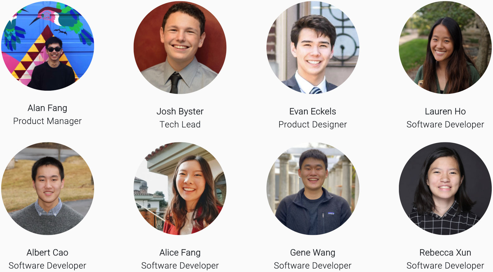
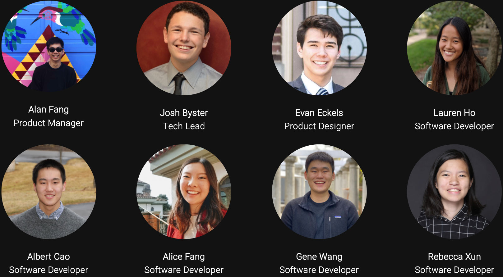
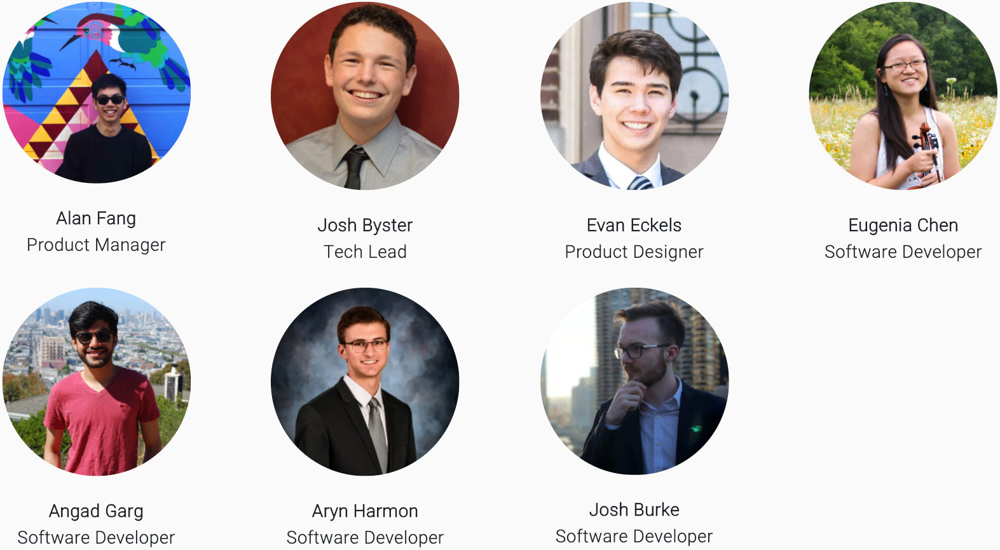
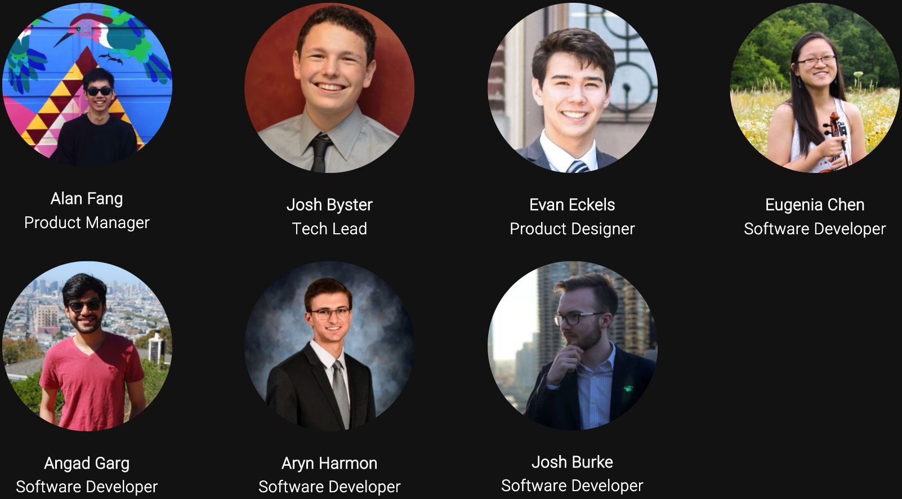

Overview
This is a 2 semester project done with Hack4Impact aimed at extending the reach and efficiency for nonprofit Life After Hate (LAH). Hack4Impact is an UIUC campus organization of students passionate about using tech for good. We develop products for nonprofits to help them further their mission and better engage their clients.
They accomplish this goal this by connecting former hate group members or members trying to leave hate groups (called formers) to resources and partners within the LAH network.
These partner businesses/individuals have volunteered their services and time to help those who are exiting hate groups. The LAH staff will then put the former in contact with these partner services to help them leave violence and racism behind. Some examples of resources are tattoo removal, career preparation, and education. ExitUSA is the specific branch of LAH that executes this process.
"Each year, more than 250,000 people in the United States are victims of hate crimes. The vast majority are violent and more than half go unreported. Between 2008 and 2017, 71 percent of extremist-related fatalities in the U.S. were committed by members of the far right or white-supremacist movements. LAH helps people leave the violent far-right to connect with humanity and lead compassionate lives." - Life After Hate
Problem
When helping people leave hate groups, LAH staff members need to sift through their resources located on many different platforms: Excel, email, paper, and more. These resources can be either businesses or organizations that will support ex-hate group members willing to change.
This time sunk looking for resources is time not spent helping people exit hate groups, limiting LAH's reach as an organization. This bottleneck in the support process can also take up to days to complete. By automating and organizing the search process, we can speed up the process of matching resources to formers. We wanted to create a highly-secure, easily searchable, centralized web application to host and manage these resources. This way, we can enable LAH to spend more time serving people and accomplish their mission on a larger scale.
How LAH fits Hack4Impact's goals
When we heard about LAH's problems, we saw an immediate opportunity to help. Our organization aims to help nonprofits broaden their impact, and we do that by creating the necessary tools so that they can better focus on their core mission. When building a product, we put an emphasis on scalability, user-friendliness, and intentionality. We put special thought into building a product that can scale with the organization and support more staff along with the organization's future goals. Through rigorous user research and testing, we optimize the UX of our applications by building around the user. To make the product as impactful as possible, we personalized it to the use cases of the nonprofit. We consider the nonprofit the priority and end user, meaning that our products are made with their goals, staff, and audience in mind.
Overview of solution
After a few calls with LAH, we found that a map view would be necessary for the platform since location and proximity of resources are important when LAH helps individuals. The map view would serve a similar purpose as websites such as Redfin, giving a visual representation of data to help illustrate distance and positioning. We are not as focused on the landscape as Redfin is when choosing real estate, but this map view is still necessary since proximity is important for our product. There is also the chance that the user may want to do a high-intent search, meaning they are looking for something very specific such as a particular resources contact name. In this case we need to display search results in a way that allows you to quickly skim through resource details. We did this by adding a separate directory view. This directory view focuses on displaying the details of the resources in a spreadsheet format to make it easy to quickly find the intended resource.
Roles and Responsibilities
I served as the Product Designer on a team with a Product Manager, Tech Lead and 5 developers. We had two different teams for the Fall and Spring semesters, only difference in composition being that the Spring team had one less developer.
Fall 2019 Team


Spring 2020 Team


As a designer and Front-end Developer, I was in charge of the UI and UX of the application. I worked closely with the Product Manager to help create user-centric prototypes and mockups, while also working with Front-end Developers to implement these designs in React.js.
Product Scoping
The first things we had to address before we got building were the scope of the project and the constraints. We needed to ensure we were picking the most impactful features to include in our product while also considering the complexity that these features may bring to the project. By thoughtfully scoping this project out, we ensure we build a product that most effectively addresses LAH's problems in 2 semesters of development.
Scope
I gave a brief overview of the rationale behind the choice of having the map view along with the directory view. This gives a broad solution to LAH's problems, but there are many details that still need to be explored.
In terms of users, we currently only have 1-2 of LAH's staff that would be using this product daily. While the current user base is small, LAH has plans to expand this resource/partner database to hundreds of volunteers and to grow their volunteer team in the future. To accommodate this, an account management system becomes a necessary feature.
One feature we actually passed on was the optimization of the map view for mobile. Given our users, we found that the application would be used almost exclusively on desktop. The time we would spend making the map view on mobile would be better spent working on another feature, so we decided to pass on scoping a complex feature that would see little to no use.
Since Hack4Impact works in increments of 1-2 semesters, it is important that we weight the complexity and impact of features against each other when deciding to include them or not. We have to prioritize completion of more important features to ensure we create the optimal product in our defined time frame.
Constraints
One constraint that was immediately obvious to us as an organization was the handoff from one team to another between the Fall and Spring semesters. We needed to ensure the second team could easily understand and work off of the existing codebase. We would need to pay special attention to naming conventions, code formatting, and standardizing the site structure.
The way the project would pan out is that the Fall team would focus on the map and directory view while the Spring team would focus on account management and tying up loose ends. We focused on addressing the main map and directory views first so that we had time to process user testing and feedback to improve our principal features.
Another constraint we came across concerned the security of our application. The data that we are displaying on our application has personally identifying information for the individuals and businesses volunteering their services. If a hate group were to get their hands on this information, it could be catastrophic for those businesses and individuals. To ensure the security of this information, we opted to use Google OAuth to handle sign-ins. Google is a widely used and highly secure service, so it was an optimal choice to ensure security and inclusivity for those who will access the platform.
Product Research
Before we start creating the designs for the application, we need to fully understand the audience of our application and some existing alternatives.
Alternatives
Starting with some alternatives to our application, the most obvious one is Excel/Google sheets. Both products allow for easy filtering, storage, and displaying of resource information. These products are similar to our directory view, but our map view remains unique. When creating this product, we will keep in mind the similarities to Excel and Google sheets. We can use this to our advantage by asking for pain points that LAH currently has with using Excel to store their resources.
For the map view, there are not really any intuitive consumer projects that could store resource information and display dynamically on a map. This is where we see a lot of value and use coming from our product. As a result, we will invest more time developing the map view.
User research
The first thing we need to do is define the user. In terms of our immediate users, we have the 2 staff members of LAH. We also need to keep the potential volunteers in mind. Our product has a well defined use case, where all our users will be using this platform to search for resources and occasionally add/edit them.
We couldn't rely on 1-2 users for all user feedback to build this application. We had to extrapolate some of the feedback to see if our platform would work for a generalized audience with little to no friction. To do this, we had Hack4Impact members test the function of our application prototypes and extensively researched the audiences and design decisions of similar products like Yelp, Google Maps, WebMD, and Redfin.
By doing some research on our users, we are able to come up with a list of user needs and other characteristics that will influence our design. By asking questions to LAH staff and volunteers, we were able to define the following user needs:
- Volunteers and staff need to be able to input different locations to base the search off of
- Users need to be able to edit the search radius to tune results for densely vs sparsely populated resource areas
- Ability to edit or add resources from any page
- LAH staff must have the ability to manage user access to the platform
- Ability to copy paste information easily
- Users need to be able to gauge distance of resource from the former
- The resources need to be easy to skim
- Users need to be able to search by tag
- This is a power tool, so actions should be quick and might not require the most guidance
- The interface should be ideal for desktop
User flow
After identifying the user needs, we can go straight into building out the user flow diagram. This will help us lay out the architecture of our application in terms of actions + screens by building around the use cases of the app.
Some of the use cases we can identify are:
- general search (looking for resources in a given radius and/or certain category)
- high-intent search (looking for a specific resource by looking up owners name)
- Adding a resource
- Editing/deleting a resource
- Giving a user permission to application
- Removing / changing user privileges
We can base our user flow diagram off of these 6 actions. This diagram combines all 6 actions into one graphic: